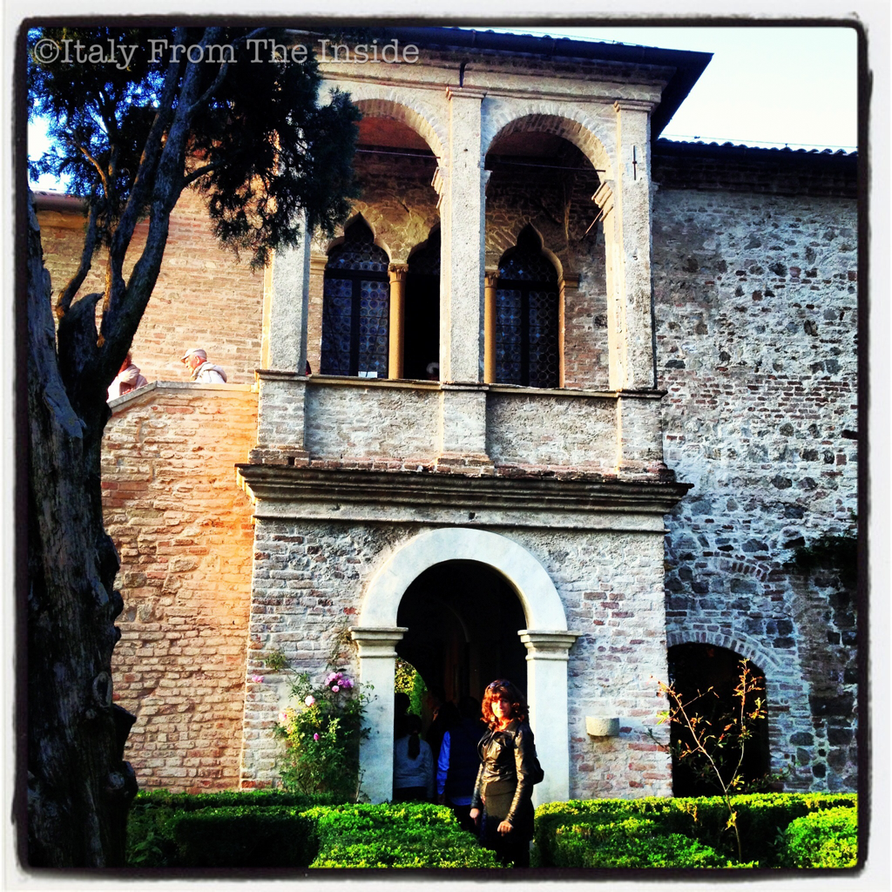

Francesco Petrarca is considered one of the earliest humanists and one of the most important Italian poets of the Renaissance. This is the house where he died and that is definitely worth a visit in case you are near Arquà, in the Veneto region. PS: In case you wonder, that's not me. You know when you want to take a photo and people don't move?!?